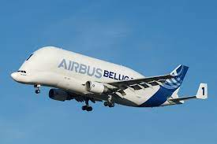

Airbus Beluga entrega satélite al Centro Espacial Kennedy Con éxito
El Airbus Beluga, un avión gigante con forma de ballena

El satélite Eurostar Neo llegó sin contratiempos al Centro Espacial Kennedy desde Toulouse, Francia, gracias al enorme Airbus Beluga. Conoce aquí todos los detalles del enorme avión con forma de ballena que hizo la entrega.